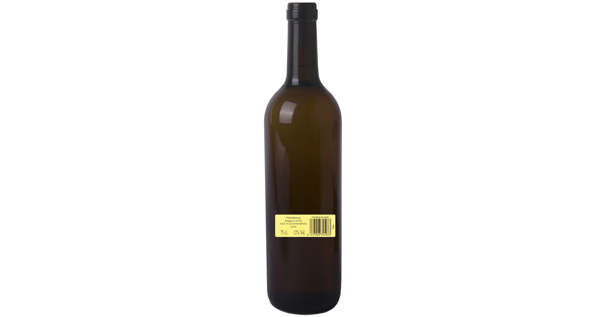
Rincón de Soto · La Rioja
Vinos cosecheros con raíz riojanaHarvest wines with a La Rioja soul
Elaboración, almacenamiento y comercialización de vinos de mesa, embotellados, Bag in Box y vino a granel desde el valle del Ebro.Production, storage and marketing of table wines, bottled wines, Bag in Box and bulk wine from the Ebro Valley.
Nuestra historiaOur history
Una bodega joven con cultura de vid y vinoA young winery rooted in grape and wine culture
Bodegas Alazán S.L. inicia su andadura en 2003 de la mano de jóvenes con gran arraigo en la cultura de la vid y el vino en el valle del Ebro.Bodegas Alazán S.L. began operations in 2003 alongside young people deeply rooted in the culture of grape growing and wine in the Ebro Valley.
La bodega tiene su sede en Rincón de Soto, en la Comunidad Autónoma de La Rioja, y se dedica a la elaboración, almacenamiento y comercialización de vinos de mesa tipo cosechero, tanto a granel como embotellados.The winery is based in Rincón de Soto, in La Rioja, and is devoted to the production, storage and marketing of traditional harvest table wines, both in bulk and bottled.
“Entre las viñas, trota alazán y llena copa, vino rojizo y canela en un brindis, tinto, rosado y blanco”.“The sorrel horse trots among the vines, a glass of reddish wine and cinnamon is filled for a toast, red, rosé and white.”

Bodega y procesoWinery and process
Capacidad, control y tecnologíaCapacity, control and technology
Bodegas Alazán cuenta con una capacidad de almacenamiento de 1.500.000 litros en depósitos de acero inoxidable.Bodegas Alazán has a storage capacity of 1,500,000 litres in stainless steel tanks.
Sus instalaciones disponen de tecnología moderna en tratamientos, como la filtración tangencial, que aporta esterilidad en un solo paso y no deja residuos sólidos. La elaboración, el almacenamiento, el embotellado y la seguridad del transporte se cuidan para conservar las cualidades del vino.Its facilities are equipped with modern treatment technology, such as cross-flow filtration, which sterilises in a single step without leaving solid residue. Production, storage, bottling and transport safety are carefully managed to preserve the qualities of the wine.
2003InicioFounded
1,5 MLitrosLitres
3MarcasBrands
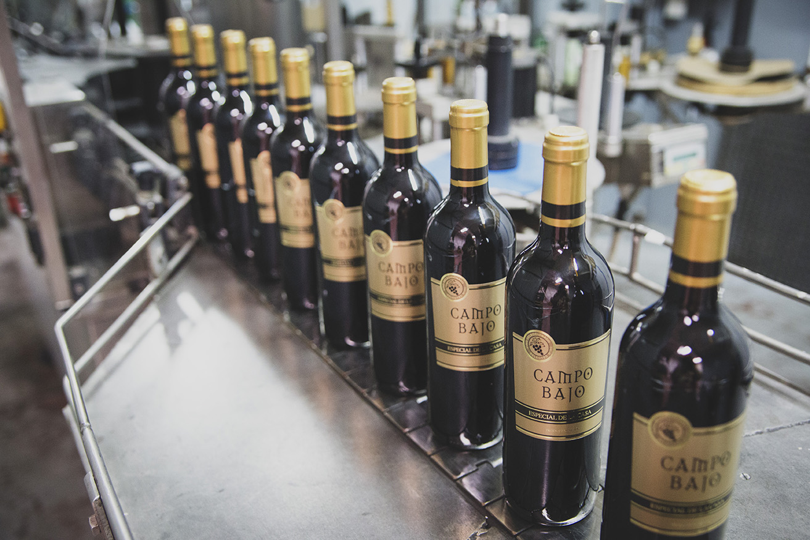
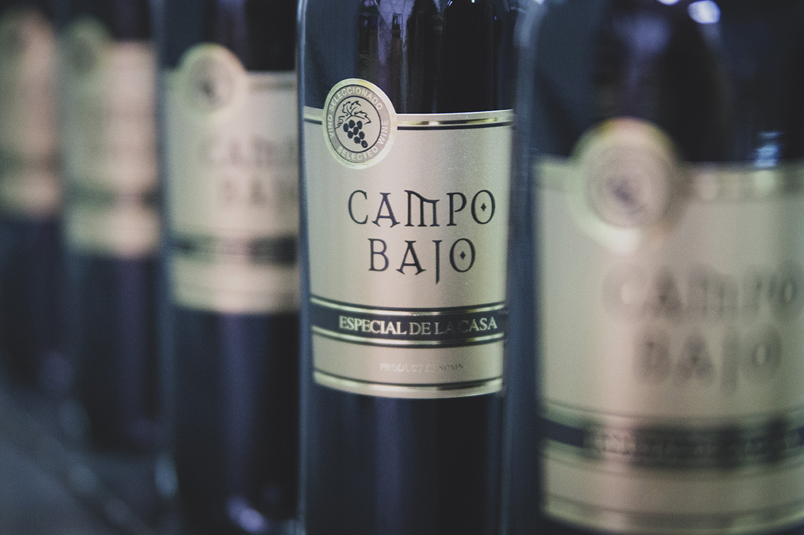
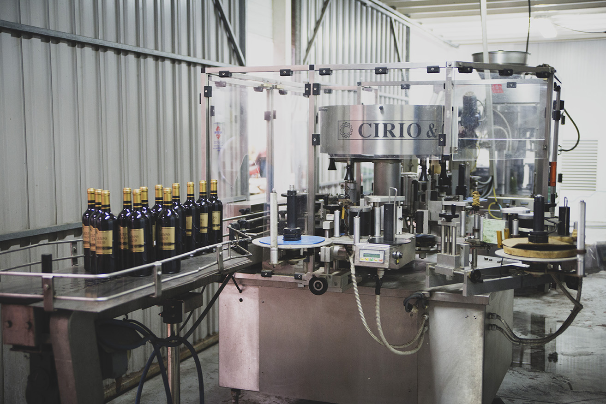
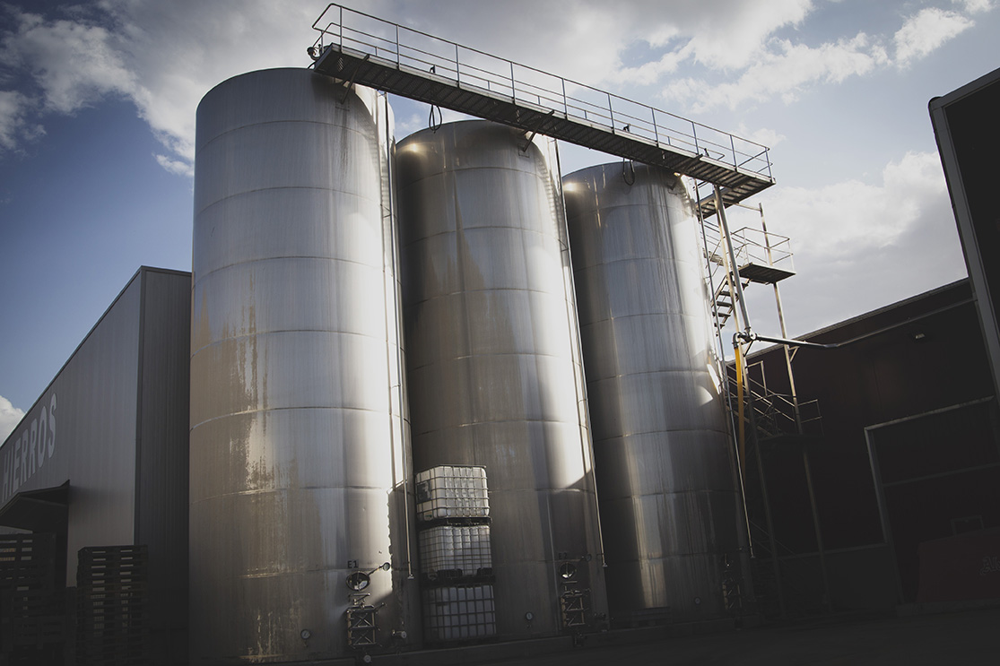
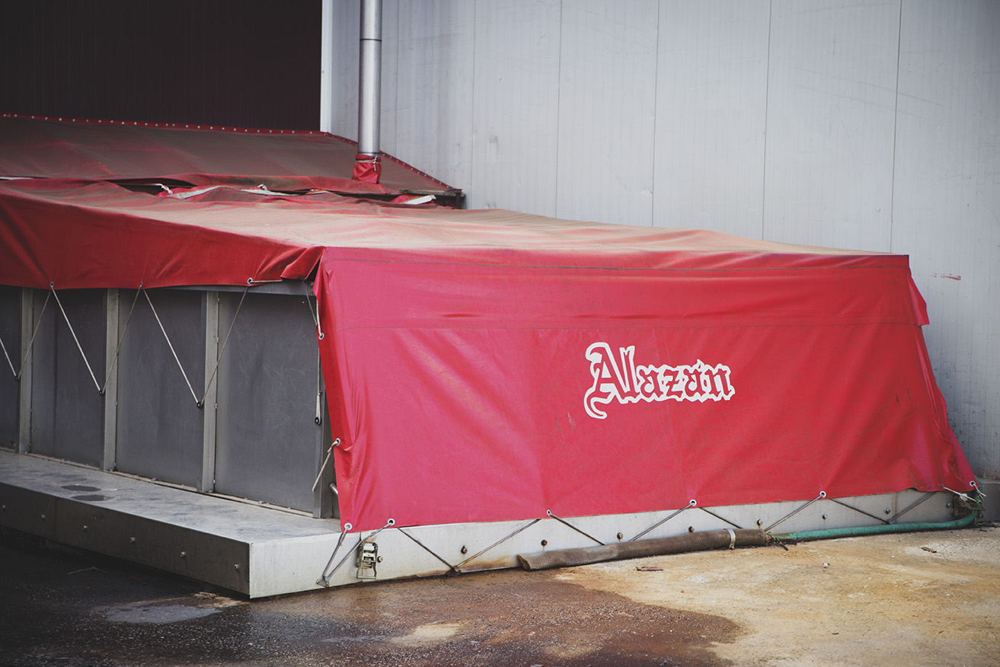
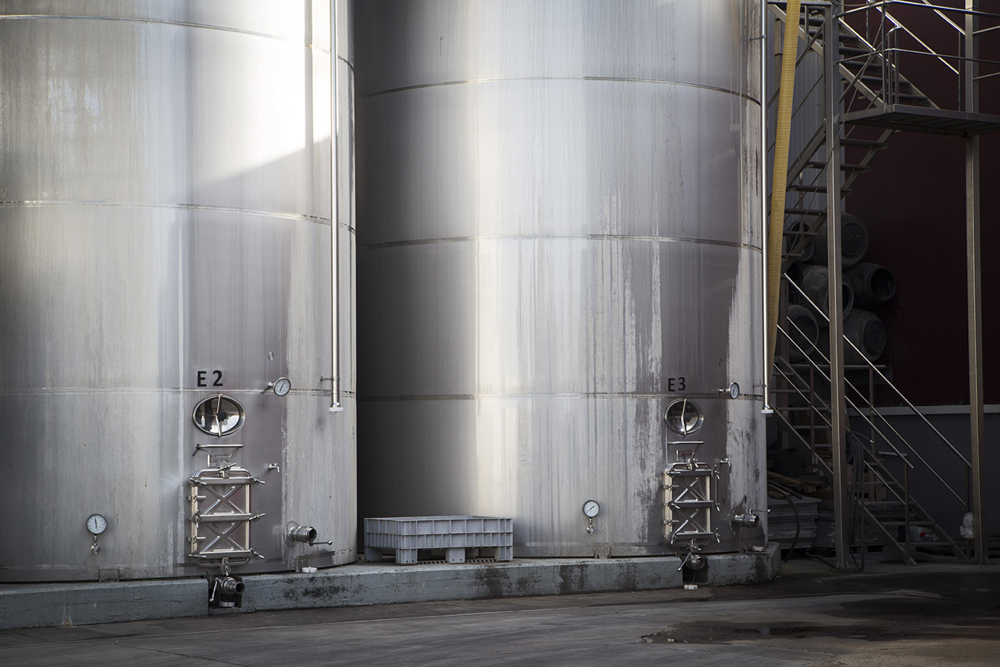
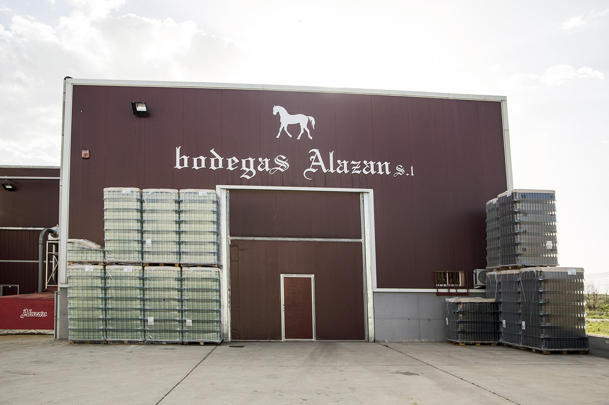
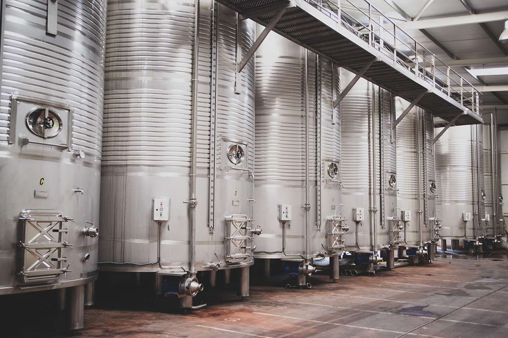
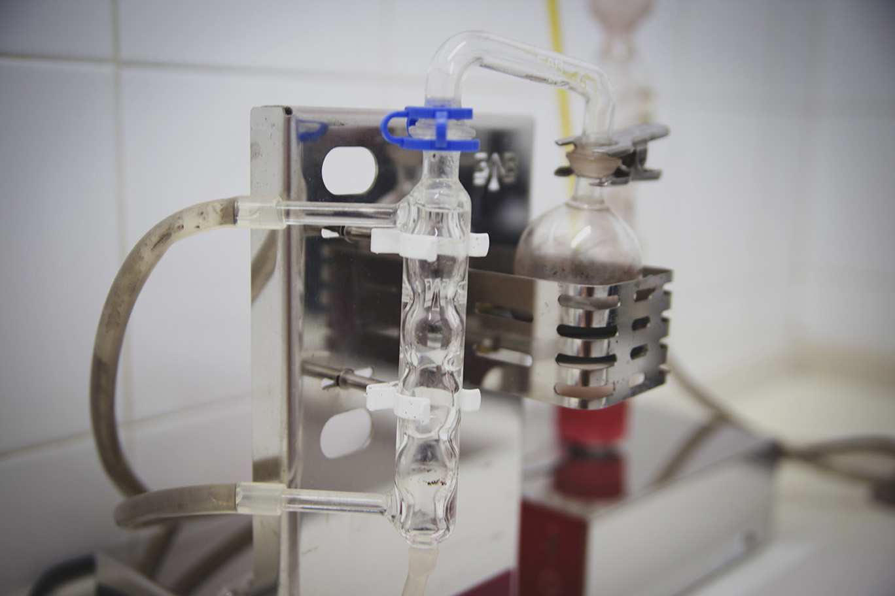
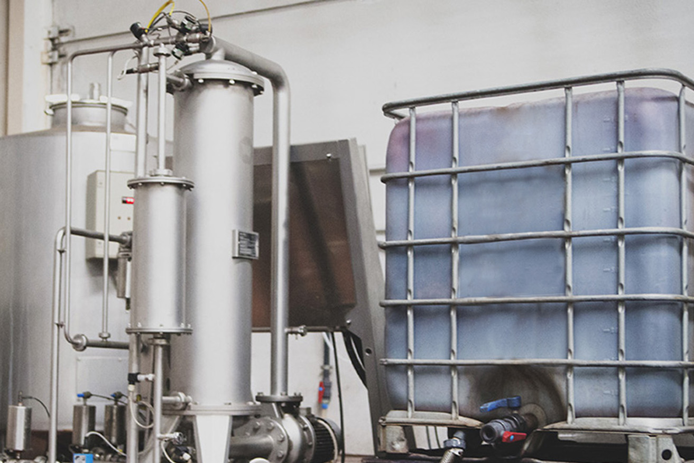
CatálogoCatalogue
Marcas y vinos embotelladosBrands and bottled wines
Bodegas Alazán embotella actualmente sus vinos con las marcas Alazán, Campo Bajo y Venta Blancas. También comercializa vino a granel en mercado nacional e internacional, principalmente europeo.Bodegas Alazán currently bottles its wines under the Alazán, Campo Bajo and Venta Blancas brands. It also sells wine in bulk nationally and internationally, mainly within Europe.
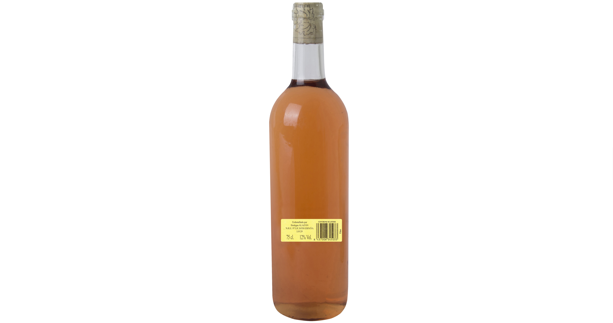
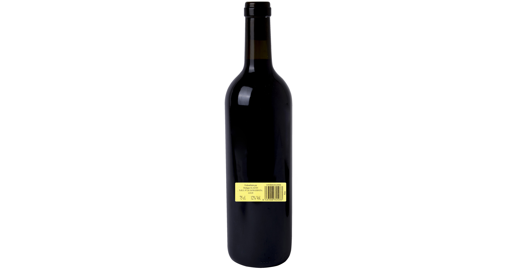


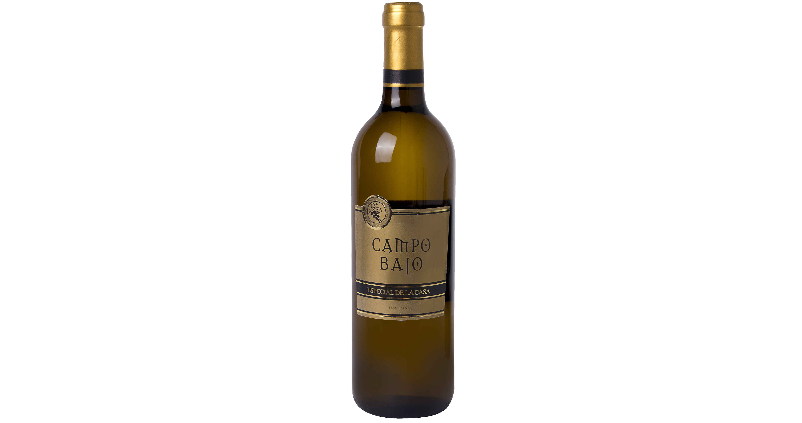

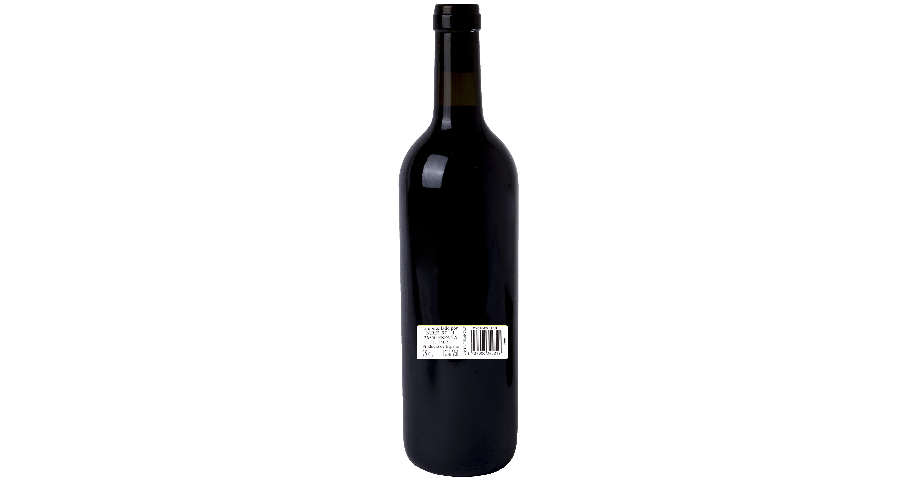
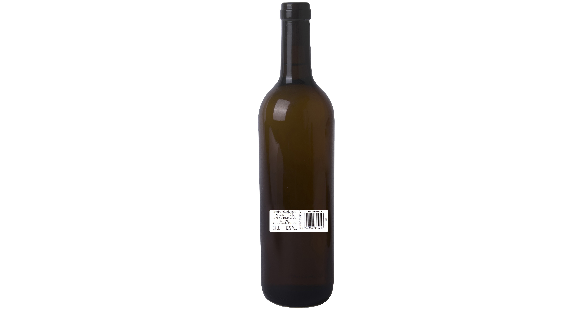
Venta a granelBulk wine
Mercado nacional e internacionalNational and international market
La comercialización de vinos a granel cuenta con un amplio mercado nacional e internacional, especialmente en países del entorno europeo.The sale of bulk wine reaches a wide national and international market, especially European countries.
CosecheroHarvest wine
Vinos de mesa del año, cercanos y competitivos, con una propuesta directa de calidad y precio.Table wines of the year, accessible and competitive, with a clear quality-price proposal.
TratamientoTreatment
Filtración tangencial, depósitos de acero inoxidable y control de almacenamiento.Cross-flow filtration, stainless steel tanks and controlled storage.
TransporteTransport
Embotellado y seguridad logística para que los vinos conserven todas sus cualidades.Bottling and logistics safety so that wines retain all their qualities.
Departamentos de productoProduct departments
Ficha de cada vinoEach wine profile
Cada vino queda presentado con su perfil, historia de gama y proceso de elaboración dentro de Bodegas Alazán.Each wine is presented with its profile, range story and production process within Bodegas Alazán.
Alazán
Blanco
Vino cosechero de mesa blancoHarvest white table wine
Limpieza y brillo en amarillo ámbar. Complejo en aromas que funden flores blancas y frutas con evocaciones de especiados y tostados. Sedoso y seco, con buen final y un retrogusto que invita a volver a probar.A clean and glossy yellow amber wine. A complex mix of aromas blending white flowers and fruit with hints of spiced and toasted notes. Silky and dry, with a good finish and an aftertaste that invites you to taste it again.
Origen y procesoOrigin and process
Vino cosechero trabajado desde la base de la bodega en Rincón de Soto, con cuidado en elaboración, almacenamiento y embotellado para conservar su perfil fresco.A harvest wine produced from the winery base in Rincón de Soto, with careful production, storage and bottling to preserve its fresh profile.
Alazán
Rosado
Vino cosechero de mesa rosadoHarvest rosé table wine
Color salmón pálido que evoca delicadeza. Intenso en nariz y exuberante en matices frutales. Seco, lleno de chispa y muy fresco.A pale salmon colour that evokes delicacy. It has an intense nose and is brimming with fruity nuances. Dry, sparkling and very fresh.
Origen y procesoOrigin and process
Rosado de mesa de perfil vivo, pensado para mantener el carácter del vino cosechero y facilitar un consumo cercano y versátil.A lively rosé table wine designed to preserve the character of harvest wine and offer an accessible, versatile drinking experience.
Alazán
Tinto
Vino cosechero de mesa tintoHarvest red table wine
Color rubí muy atractivo. Nariz intensa con cereza, ciruela, mora y arándano. Delicioso en boca, con taninos suaves y seco. Deja recuerdos de frutas rojas, hierbas y especias.A very attractive ruby red colour. Intense nose with cherry, plum, blackberry and blueberry. Delicious on the palate, dry and smooth in tannins, with notes of red fruit, herbs and spices.
Origen y procesoOrigin and process
Tinto cosechero elaborado para expresar fruta, suavidad y una boca seca, con conservación cuidada en depósitos de acero inoxidable.A harvest red wine made to express fruit, softness and a dry palate, carefully preserved in stainless steel tanks.
Alazán
Semi Crianza
Vino cosechero tinto semi crianzaSemi-aged red harvest wine
Color granate teja, aromas tostados y de roble procedentes de la crianza. Delicioso en boca, suave y seco. Sorprende, se recuerda y deja ganas de volverlo a disfrutar.Tile-red colour with toasted and oak maturation aromas. Delicious, smooth and dry. A surprising and memorable wine that leaves the palate wanting to enjoy it again.
Origen y procesoOrigin and process
Perfil de crianza breve orientado a sumar notas de roble y tostado sin perder la suavidad del vino cosechero.A short ageing profile designed to add oak and toasted notes while keeping the smoothness of a harvest wine.
Campo Bajo
Tinto
Vino de mesa tintoRed table wine
Atractivo rubí a la vista, con aromas de cereza, ciruela, moras y arándanos. Intenso en nariz, delicioso en boca, seco y suave en taninos.An attractive ruby colour, with aromas of cherry, plum, blackberry and blueberry. Intense on the nose, delicious on the palate, dry and smooth in tannins.
Origen y procesoOrigin and process
Marca embotellada por Bodegas Alazán para ofrecer un tinto de mesa directo, amable y fácil de volver a saborear.A brand bottled by Bodegas Alazán to offer a straightforward, pleasant table red wine that invites another taste.
Campo Bajo
Blanco
Vino de mesa blancoWhite table wine
Ámbar muy limpio y brillante, con aromas complejos que funden frutas y flores blancas, con matices especiados y tostados. Buen final, sedoso y seco.A very clean and shiny amber colour, with complex aromas blending fruit and white flowers, with spiced and toasted notes. Good finish, silky and dry.
Origen y procesoOrigin and process
Blanco de mesa con enfoque de limpieza, brillo y equilibrio aromático, embotellado dentro de la gama Campo Bajo.A white table wine focused on clean appearance, brightness and aromatic balance, bottled within the Campo Bajo range.
Campo Bajo
Rosado
Vino de mesa rosadoRosé table wine
Suave tono salmón que evoca delicadeza. Exuberante en aromas frutales, intenso en nariz, seco y alegre por su textura chispeante.A light salmon shade that evokes delicacy. Exuberant in fruity aromas, intense on the nose, dry and lively with a sparkling texture.
Origen y procesoOrigin and process
Rosado Campo Bajo pensado para transmitir frescura y facilidad de servicio en una gama de mesa accesible.A Campo Bajo rosé designed to convey freshness and easy service within an accessible table wine range.
Campo Bajo A.R.
Tinto
Vino cosechero de mesa tintoHarvest red table wine
Rojo rubí intenso, con registros de cereza, ciruela y frutos del bosque como mora y arándano. Suave al paladar, seco y delicioso.Intense ruby red, with notes of cherry, plum and fruits of the forest such as blackberry and blueberry. Smooth, dry and delicious on the palate.
Origen y procesoOrigin and process
Formato Tirilla Campo Bajo A.R. para un tinto cosechero de perfil directo y frutal.Tirilla Campo Bajo A.R. format for a direct and fruity harvest red wine.
Campo Bajo A.R.
Blanco
Vino cosechero de mesa blancoHarvest white table wine
Amarillo ámbar limpio y brillante. Aromas de flores blancas y frutas con evocaciones especiadas y tostadas. Sedoso, seco y con buen final.Clean, glossy yellow amber. Aromas of white flowers and fruit with spiced and toasted hints. Silky, dry and with a good finish.
Origen y procesoOrigin and process
Formato Tirilla Campo Bajo A.R. con un blanco cosechero de aromas limpios y final agradable.Tirilla Campo Bajo A.R. format with a harvest white wine of clean aromas and a pleasant finish.
Formatos prácticosPractical formats
Bag in Box
Formatos de 5 y 15 litros con bolsa hermética y grifo para servir, pensados para conservar el vino y facilitar su consumo.5 and 15 litre formats with airtight bag and tap, designed to preserve the wine and make serving easier.

Bag in Box
Bag in Box Alazán 5 L
Tinto | RosadoRed | Rosé
Vino de mesa del año que lleva la calidad a granel en la esencia, servido en bolsa hermética con grifo.A table wine of the year that brings bulk quality to its essence, served in an airtight bag with a tap.
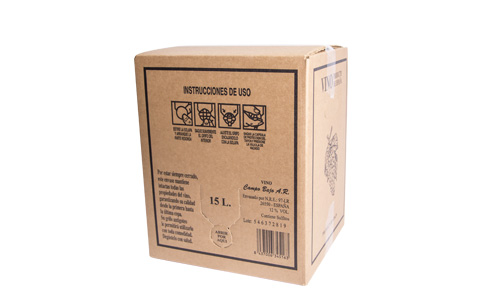
Bag in Box
Bag in Box Kraft 15 L
Tinto | RosadoRed | Rosé
Formato maxi que multiplica la calidad y asequibilidad de un gran vino cosechero para disfrutar de un caldo excelente.A maxi format that multiplies the quality and affordability of a great harvest wine.

Bag in Box
Bag in Box Kraft 5 L
Tinto | Rosado | BlancoRed | Rosé | White
Packaging ideal para un vino cosechero que demuestra que la calidad también puede ser asequible.Ideal packaging for a harvest wine showing that quality can also be affordable.
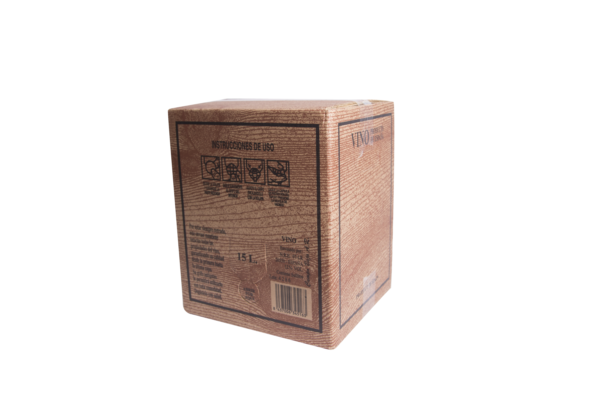
Bag in Box
Bag in Box Madera 15 L
Tinto | RosadoRed | Rosé
Formato atractivo para gran consumo, con bolsa de 15 litros herméticamente cerrada y grifo para servir.An attractive large-consumption format with a 15-litre airtight bag and tap for serving.

Bag in Box
Bag in Box Madera 5 L
Tinto | Rosado | BlancoRed | Rosé | White
Formato cómodo para un gran vino a granel del año, en bolsa hermética con grifo para el servicio.A convenient format for a great bulk wine of the year, in an airtight bag with a tap for serving.
ContactoContact
Hablemos de vinoLet’s talk wine
- DirecciónAddressPolígono Industrial Martín Grande, calle 3, parcela R, Rincón de Soto, La Rioja
- TeléfonoPhone941 141 796
- Emailalazan@bodegasalazan.com